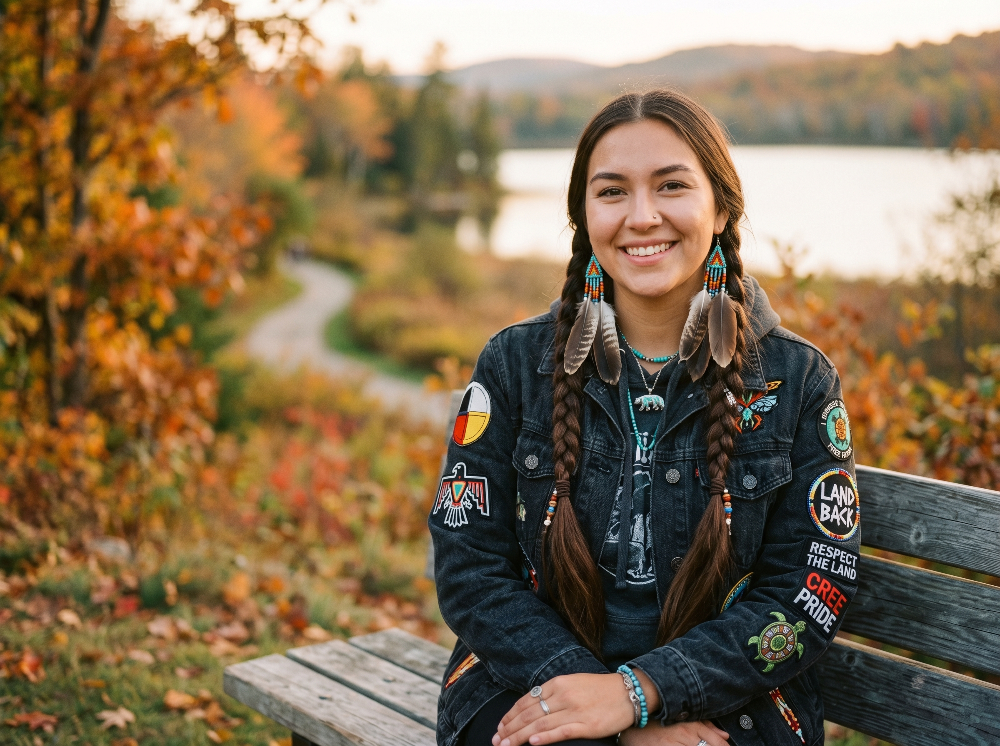

Los Personajes
Tres voces. Tres ciudades. Una realidad que el Mundial no transmite.
Lucía Hernández
19 años · Anapra, Ciudad Juárez Gentrificación silenciosa"Si no lo dibujo, desaparece."
Lucía creció entre las calles de tierra de Anapra, donde aprendió a dibujar en los márgenes de los cuadernos de la escuela. Desde que anunciaron el Mundial, su barrio cambió: primero los precios, luego los vecinos. Hoy lleva un registro visual de todo lo que desaparece — su forma de resistir.
Apariencia: Trenzas negras, hoodie verde holgado. Siempre con una mochila llena de cuadernos de bocetos.
Marcus Washington
17 años · Inglewood, Los Ángeles Exclusión sistémica"¿Para qué ganar si la cancha está cambiada?"
Marcus soñaba con jugar en el SoFi Stadium. Creció a tres cuadras de él, en una comunidad que construyó ese barrio con décadas de trabajo. Cuando empezaron las obras del Mundial, su familia recibió una notificación de desalojo. Ahora usa el fútbol para procesar una rabia que no sabe cómo nombrar.
Apariencia: Hoodie rojo, contextura atlética. Rara vez se lo quita — es su escudo y su identidad.

Aiyana Thunderbird
20 años · Nación Squamish, Vancouver Lucha indígena por el territorio"La tierra no se vende, se cuida."
Aiyana heredó de su abuela el don de la memoria oral: canciones, mapas de palabras, nombres de lugares que ningún GPS conoce. Cuando las excavadoras llegaron al territorio Squamish para construir infraestructura del Mundial, comenzó a grabar todo en su teléfono. Su archivo digital es el último refugio de una historia que el concreto quiere borrar.
Apariencia: Pelo largo y negro liso, hoodie verde con parches. Siempre con los audífonos al cuello.
Lo que los une
No se conocen. Viven en países distintos, hablan idiomas distintos, tienen historias distintas. Pero un hashtag — #FueraDeJuego — los une. Y ahora tú también eres parte de esta red.
Únete a la historia